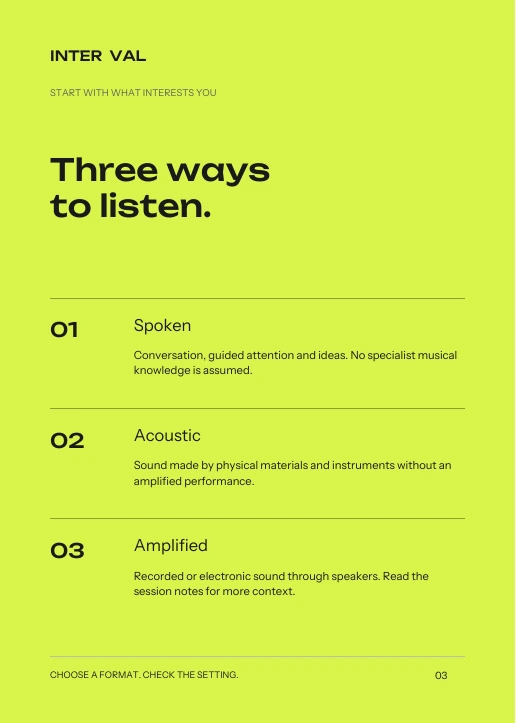
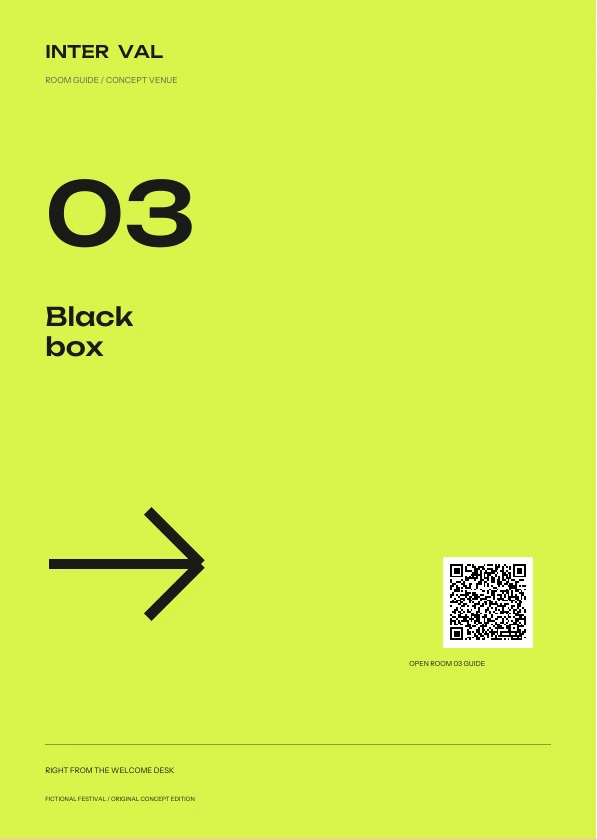
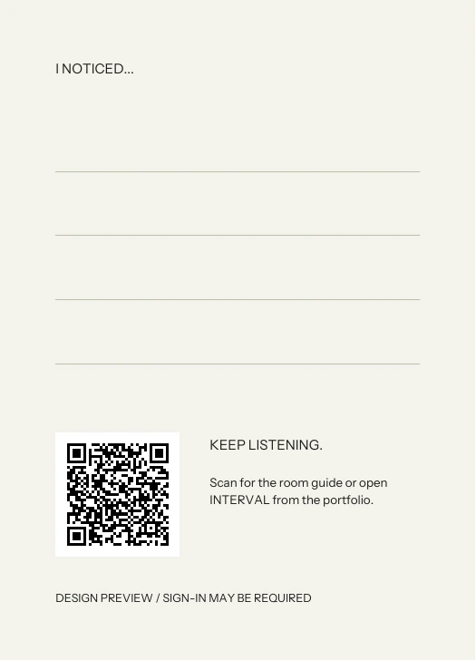

Make
space.
A festival for
close listening.
From the first invitation to the room you choose. A shared language of intervals, room numbers and deliberate space makes the whole experience recognisable.
 ILLUSTRATIVE MOCKUP / EXACT ARTWORK AVAILABLE BELOW
ILLUSTRATIVE MOCKUP / EXACT ARTWORK AVAILABLE BELOWAn invitation. A programme. A way to find the room.
Twelve pages with distinct jobs, held by one grid.



Scale, image, information and a purposeful pause.
The system changes composition with the message.


A room number is the shared identifier.
It survives a large sign, a pocket page and a small screen.



A festival for
close listening.
01 LISTENING ROOM
02 STUDIO
03 BLACK BOX
The welcome directory is the fourth sheet in the signage PDF. This is a fictional venue model; actual routes, mounting, lighting and tactile alternatives require an on-site review.
The listening card offers a reason to pause.
Its reverse returns you to the room guide.


A6, two-sided, proposed uncoated stock. It belongs beside the guide because it supports the listening experience—not because a brand needs more merchandise.
Download the card PDF ↓Follow the connection ↗QR codes open the current concept preview and may require sign-in. Update the destination before physical production for another domain.
A four-part social sequence moves from invitation
to informed choice. Each frame has a different job.
Saturday — Sunday
Three rooms. One programme.
A quiet companion to the campaign: chosen sessions first, room information second, and a clear reminder that a personal plan is not a reservation.
Open the email design ↗The display voice sets the tone.
The interface lets you get on with it.
INTER
Opt-in motion: the gap opens and settles. Reduced-motion preferences keep the mark still.
#D9F44CInvitation, selection and a decisive action.
#191B18Text, structural rules and the night-facing identity.
#F3F2ECCalm reading and planning surfaces.
Wide, deliberate letterforms. Used for short statements, never long programme descriptions.
Saturday, 11:00–11:45
Room 01 · All seated · Steady light
Readable titles, useful descriptions and explicit action labels.
11:00—11:45
ROOM 01
SATURDAY
Tabular details that let the eye compare a programme quickly.
This isolated specimen demonstrates state styling. The product adds real conflict handling and undo.
Try the selection state or the illustrative loading state.
Announcement → programme → personal plan → room.
Every application serves that experience.
45 minutes between sessions